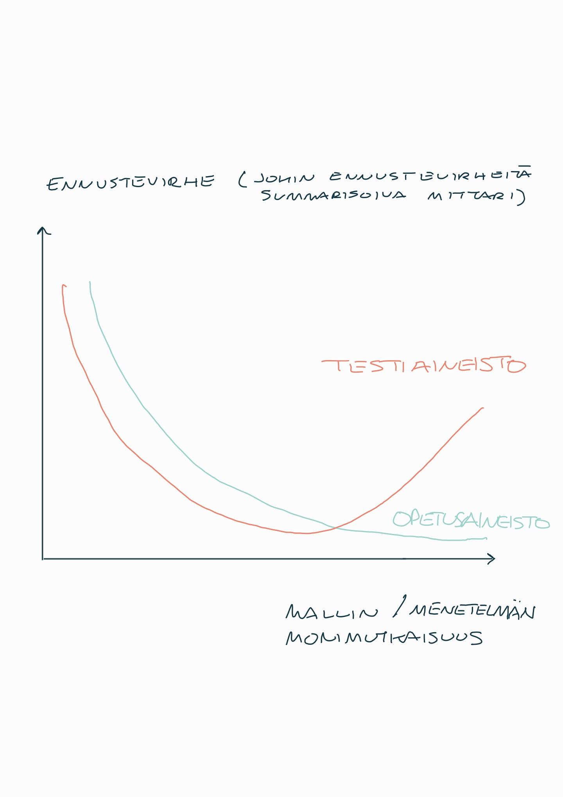

14 Tilastollisesta ennustamisesta
Kuten olemme jo tähän menneessä nähneet, tilastollinen analyysi ja sen erottamattomana osana tilastollinen päättely on keskeinen vaihe tieteellistä tutkimusta. Vielä ennen tilastollisen selittämisen ja ennustamisen välisiä eroja koskevia pohdintoja muistutetaan minkälaisia tilastollisia analyysitilanteita ja menetelmiä olemme tähän mennessä sivunneet:
Aineistojen perustunnuslukujen laskeminen ja kuvaileminen (ts. kuvaileva tilastotiede).
- Yksinkertaisin tilastollisen päättelyn muoto on hyödyntää aineistoa kuvailevia tunnuslukuja, kuten keskiarvoja ja hajontalukuja (kuten niitä on esitelty edellä). Niistä voidaan kuitenkin tehdä vain melko rajoittuneita päätelmiä. Kuvaileva tilastotiede toimii näissä yhteyksissä lähinnä alustavien analyysien ja aineistoon tutustumisen kautta.
Muuttujien välisten (mahdollisten) yhteyksien tutkiminen
- Varsinkin havainnoivassa tutkimuksessa selvitetään, miten selittävät muuttujat ovat yhteydessä selitettävään vastemuuttujaan. Näissä yhteyksissä voidaan käyttää esim. lineaarista tai logistista regressiota (ja niiden monenmoisia laajennuksia) tai esim. aikasarja-analyysissä aikasarjoja analysoitaessa (aikasarjoista lyhyesti vielä myöhemmin). Näiden pohjalta voidaan arvioida muuttujien yhteyksiä ja riippuvuussuhteita, ja myöskin muodostaa ennusteita, kuten tässä luvussa tullaan tarkastelemaan.
Hypoteesien testaaminen
- Hypoteesien testaamisella voidaan osaltaan arvioida kuinka uskottavaa on, että nyt havaittu käyttäytyminen tai ilmiö toistuu jatkossa ja mahdollisesti johtopäätelmät myös yleistyvät muihin tilanteisiin.
Ryhmitteleminen, kuten dimension pienentäminen.
- Tätä ei ole käsitelty eikä käsitellä juurikaan vielä tällä kurssilla. Ajoittain tilastotieteellä pyritään löytämään aineistosta erilaisia ryhmiä ja luokkarakenteita. Tässä yhteydessä laajoja aineistoja saatetaan pystyä “puristamaan” pienemmiksi ja siten mahdollisesti helpommin analysoitaviksi ja tulkitattaviksi.
Nämä tavoitteet korostavat valtaosin aineiston mallintamis- ja selittämistavoitteita. Käytännössä tilastotieteen ja sen sovellusalueiden tutkimuksessa tulisi osata erottaa (tilastollinen) selittäminen ja ennustaminen. Tätä eroa koskevat tarkemmat yksityiskohdat ovat jälleen selvästi tämän kurssin ulkopuolella myöhemmissä tilastotieteen opinnoissa, mutta seuraavassa kuitenkin tehdään tähän eroavaisuuteen liittyviä keskeisiä huomioita.
Ts. aineiston mallintaminen on tärkeää ja monesti erityisenä tavoitteena, mutta usein haluamme myös muodostaa ennusteita tulevaa kehitystä koskien. Tämä tarkoittaa siis uusien havaintojen arvojen ennustamista.
14.1 Tilastollinen selittäminen vs. ennustaminen
(Tilastollinen) selittäminen tarkoittaa esim. kahden muuttujan välisen yhteyden tutkimista
- Vrt. siis tämän kurssin yksinkertainen tilanne lineaarisen regressiomallin yhteydessä, jota voidaan suoraviivaisesti ja usein pitääkin laajentaa useiden selittävien (ennustavien) muuttujien samanaikaiseen käyttämiseen.
Selitysmalli
Esimerkki. Tutkijaa saattaa kiinnostaa esimerkiksi tupakoinnin vaikutus sepelvaltimotautikuolleisuuteen tai ylipainon vaikutus leikkauksen jälkeisiin infektioihin. Tällöin pyrkimyksenä on rakentaa “selitysmalli”, jossa on perustellut syy-seuraussuhteet selittävästä (selittävistä) muuttujista selitettävään muuttujaan.
(Tilastollinen) ennustaminen vastaavasti tarkoittaa, että tietyillä selittävän tai selittävien (tai ‘’ennustavien’’) muuttujien yhdistelmillä voidaan ennustaa ennustettavan muuttujan arvoa.
Ts. siis ennustettavana muuttujana toimii tilastollisen mallin näkökulmasta katsoen vastemuuttujan arvo, jota pyritään ennustemallin avulla ennustamaan.
Ennustemalleja rakennettaessa varsinaisilla selityssuhteilla ei välttämättä ole merkitystä. Tärkeintä on mallin ennustekyky, ei niinkään esim. yksittäisen regressiokertoimen arvo ja siihen liittyvät tarkemmat tulkinnat ja mahdollinen tilastollinen testaaminen. Tilastollisesti merkitsevä regressiokerroin ei tarkoita, että muuttujalla olisi välttämättä todellista ennustekykyä.
Ennustekyky on siis tutkittava erikseen. Esimerkiksi lineaarisen mallin perinteiset tunnusluvut, kuten selitysaste, eivät vielä kerro mallin todellisesta ennustekyvystä paljoakaan, koska ennusteet koskevat havaintoja, joita ei käytetä mallin estimoinnissa (opettamisessa). Tästä huolimatta melko usein ennustemallin rakentaminen perustetaan pitkälle samoihin tilastollisen päättelyn ja estimointiteorian lähtökohtiin mitä olemme jo sivunneet tällä kurssilla.
Hyvin usein tutkimuksissa raportoidaan, että tietty muuttuja “ennustaa” (predict) toista. Usein kuitenkin taustalla on tällöinkin usean muuttujan selitysmalli, jonka regressiokertoimien tilastollista merkitsevyyttä on tulkittu siihen tapaan mitä edellä kuvattiin. Yleensä tässä yhteydessä on kuitenkin siis kyse selittämisestä, ja kuten todettua, mallin ennustekyky pitää tutkia erikseen.
Erityisesti aikasarja-analyysissä ennustaminen on perinteisesti ollut yksi kaikkein keskeisimmistä tavoitteista.
14.2 Tilastolliseen ennustamiseen liittyviä huomioita
Esimerkki. Kovin usein toistuvaa pohdiskelua ja jälkiviisautta jälkikäteen.
“Olisihan se pitänyt tietää/arvata!”
Vai olisiko sittenkään!? Tähän pohdiskeluun palataan alapuolella.
Ennustamista on kaikkialla ja se on korvaamatonta! Sen rooli on paljon keskeisempi osa meidän kaikkien arkea mitä ensiajatukselta saattaa tulla mieleen.
Esimerkkejä. Kun valitsemme reitin työmatkalle, päätämmekö menemmekö toisille treffeille tai säästämme huonompia aikoja varten, teemme ennusteen tulevaisuuden kehityksestä ja siitä, miten mahdollisesti suunnitelmamme vaikuttavat suotuisan tuloksen todennäköisyyteen.
- Lisää pohdintaa ja esimerkkejä, kuten ylläolevat esimerkit, löytyvät Silverin kirjasta (2014) (ks. Oheislukemistoa).
Arkiset ongelmat eivät aina vaadi ankaraa ajattelua ja pohdiskelua erilaisten vaihtoehtojen välillä niihin käytettävissä olevan ajan ollessa rajallinen. Tästä huolimatta teet ennusteita tiedostaen ja useimmiten tiedostamatta monta kertaa päivässä!
Ennustevirhe
Ennustevirhe. Ennustetta \(\widehat{y}^e\) verrataan toteutuneeseen arvoon tai kehitykseen \(y\). Näiden erotuksena muodostuu ennustevirhe \(y - \widehat{y}^e\).
Riippuen ennustettavasta kohteesta (kuten riippuen tilastollisen mallin vastemuuttujan luonteesta eli onko se esimerkiksi jatkuva vai diskreetti sm.), ennustevirhe näyttäytyy eri muodoissa.
Lähtökohtana on (luonnollisesti) minimoida ennustevirheet. Käytännössä useinmiten mm. vastemuuttujan luonteen perusteella valitaan sopiva ennustevirheitä summarisoiva tunnusluku, kuten keskineliöennustevirhe (jatkuvat vastemuuttujat) tai luokitteluvasteiden tapauksessa väärin ennustettujen luokitteluiden suhteellinen osuus.
Ajoittain ennustetarkkuutta on helpompi ja toisaalta sitten vaikeampi tarkkailla.
Esim. taloustieteessä on paljon helpompi arvioida työttömyyttä koskevaa ennustetta kuin esimerkiksi ennustetta (jopa väitettä) velkaelvytyksen tehokkuudesta.
Toisaalta valtio-opissa voidaan arvioida vaalitulosta koskevia ennusteita suoraviivaisesti vaalien jälkeen, mutta saattaa kulua vuosikymmeniä nähdä miten poliittisten instituutioiden ennusteisiin perustuvat ennakoidut muutokset vaikuttavat poliittisten päätösten tuloksiin.
Esimerkki: Finanssikriisi 2008. Silverin kirjan (2014) luvun 1 pohdintaa ennustevirheestä vuosien 2007–2009 finanssikriisiin liittyen.
- Tuona aikana tapahtui pörssikurssien voimakas lasku, Lehman Brothersin kaltaisia aikoinaan arvostettuja yhtiöitä meni vararikkoon, luottomarkkinat olivat käytännössä “jäätyneet”, Las Vegasissa asuntojen hinnat laskivat 40 prosenttia (osoittaen osaltaan vallinnutta laajempaakin asuntokuplaa eli ts. perusteettoman korkeita asuntojen hintoja), työttömyys kasvoi räjähdysmäisesti jne.
Pohditaan finanssikriisin ennustettavuutta hieman ennen kriisin alkamista eli tilanteessa kun ennusteita muodostettiin vielä näkemättä laajalti yllätyksenä tullutta kriisiä. Lopulta tapahtuneiden ennustevirheiden yhteisiä ja tyypillisiä piirteitä myös muita sovelluksia ajatellen:
- Asunnonomistajat ja sijoittajat ajattelivat, että nousevat hinnat viittasivat siihen, että asuntojen hinnat jatkaisivat nousuaan (todellisuudessa historia viittasi siihen, että pankki- ja finanssikriisien yhteydessä niillä on taipumus laskea).
- Luottoluokistuslaitokset (samoin kuin Lehman Brothersin kaltaiset pankit) eivät ymmärtäneet, miten riskialttiita asuntovakuudelliset arvopaperit olivat. Ongelma ei varsinaisesti ollut siinä, että luokituslaitokset eivät nähneet asuntokuplaa. Sen sijaan niiden ennustemallit olivat täynnä huonoja oletuksia ja väärää “itseluottamusta” mahdollisten asuntojen hintojen romahduksen riskeistä.
- Laajasti ei ennakoitu, miten asuntokriisi laukaisee globaalin rahoituskriisin. Se johtui suurelta osin liiallisesta velkaantumisesta markkinoilla, jossa lyötiin erinäisten instrumenttien myötä kasvavissa määrin vetoa yhdysvaltalaisten halukkuuden puolesta sijoittaa uuteen kotiin.
- Rahoituskriisin välittömissä jälkimainingeissa ei osattu ennustaa, miten laajoja taloudellisia ongelmia se aiheuttaa. Finanssikriisit tyypillisesti tuottavat erittäin syviä ja pitkäkestoisia taloudellisia taantuma- ja lamajaksoja.
Edellä olevan esimerkin tilanteessa, ja laajemminkin vastaavissa tilanteissa ja sovelluksissa, joihin liittyy epäonnistuneita ennusteita, epäonnistumisissa on (ainakin yksi) tyypillinen yhteinen piirre. Ts. kussakin tapauksessa ennustajat (ammattilaiset tai tavanomaiset kansalaiset) jättävät/jättivät keskeisen asiayhteyteen liittyvän tekijän huomiotta.
- Olennainen kysymys kuuluu, olisiko tämä tekijä ollut ennakoitavissa ennen ennusteiden kohteena olevan tapahtuman tapahtumista? Ja jos se olisi ollut tiedossa, olisiko se voinut olla osa tilastollista (ennuste)mallia?
Esimerkki (jatkoa): Jatketaan finanssikriisiä koskevan esimerkin käsittelyä. Mitä tekijöitä ei osattu nähdä ennen finanssikriisin puhkeamista (edellisen esimerkkikohdan numeroituihin kohtiin viitattuna):
- Asunnonomistajien luottamus asuntojen hintoihin johtui ehkä siitä, että lähimenneisyydessä Yhdysvalloissa asuntojen hinnat eivät olleet laskeneet merkittävästi. Kuitenkaan koskaan aikaisemmin Yhdysvaltojen asuntojen hinnat eivät olleet nousseet niin laajalla alueella kuin romahdusta edeltävällä kaudella.
- Pankkien luottamus luottoluokituslaitosten (kuten Moody’s ja S&P) kykyyn luokittaa asuntovakuudellisia arvopapereita ehkä perustui siihen, että laitoksina ne olivat onnistuneet pätevästi luokittamaan muunlaista rahoitusomaisuutta. Kuitenkaan luottoluokituslaitokset eivät olleet koskaan aikaisemmin luokittaneet yhtä uusia ja monimutkaisia arvopapereita mitä tuolloin.
- (Taloustietelijöiden) luottamus rahoitusjärjestelmän kykyyn kestää asuntokriisi syntyi ehkä siitä, että aikaisemmin asuntojen hintojen heilahtelulla ei yleensä ollut suuria vaikutuksia rahoitusjärjestelmässä. Kuitenkaan rahoitusjärjestelmä ei luultavasti koskaan aikaisemmin ole ollut yhtä vekkaantunut eikä vedonlyöntiä asuntojen hinnoista ollut tehty vastaavassa mittaluokassa.
- Poliittisten päättäjien luottamus siihen, että talous toipuu nopeasti rahoituskriiseistä syntyi ehkä viime vuosikymmenten taantumista saaduista kokemuksista. Useampia niitä oli seurannut nopea “V-muotoinen” toipuminen, kuten nyt myös myöhemmin mm. koronapandemian aikaan. Kuitenkaan nämä taantumat eivät olleet liittyneet rahoituskriiseihin ja rahoituskriisit ovat (yleensä) erilaisia.
Jokaista edellistä kohtaa yhdistää ennustamiseen hyvin keskeisesti liittyvä seikka: Pyrittiin ennustamaan tilannetta/ilmiötä, joka oli kuitenkin ns. otoksen ulkopuolella (engl. out-of-sample) eikä siis vastaavasta tilanteesta ollut aiempaa kokemusta (=dataa). Kun ennustaminen epäonnistuu merkittävällä tavalla, tämä sama seikka jättää yleensä runsaasti sormenjälkiä rikospaikalle.
- Miten tämä huomio näyttäytyy siis oheisen esimerkin tapauksessa?
Esimerkki (jatkoa):
- Luottoluokituslaitos (kuten Moody’s) arvioi, missä määrin asuntolainojen hoitamatta jättämiset liittyivät toisiinsa, rakentamalla (luultavasti ainakin osin) tilastollisen mallin menneisyyden aineiston perusteella. Oletettavasti he käyttivät mallin rakentamiseen noin 1980-luvulle ulottuvaa Yhdysvaltain asuntomarkkina-aineistoa.
- Ongelmana oli, että 1980-luvulta 2000-luvun alkuvuosiin saakka asuntojen hinnat olivat aina vakaat tai nousevat Yhdysvalloissa. Tässä tilanteessa oletus, että asunnonomistajien asuntolainat eivät juurikaan liittyneet toisiinsa oli luultavasti perusteltu ja riittävän hyvä tilastollisen mallintamisen pohjaksi.
- Kuitenkaan menneessä aineistossa mikään ei olisi kuvannut mitä tapahtuu kun asuntojen hinnat alkavat laskea kauttaaltaan samanaikaisesti. Ts. asuntoromahdus oli otoksen ulkopuolinen tapahtuma ja tässä tilanteessa luottoluokituslaitosten mallit olivat lähtökohtaisesti huonoja lainojen hoitamatta jättämisen riskiä arvioitaessa.
Finanssikriisiä koskevan esimerkin tilanteessa otoksen ulkopuolisiä ilmiöitä koskeva ongelma realisoitui siten, että muodostettu tilastollinen malli, kuten vaikkapa lineaarisen regressiomallin sopiva laajennus, estimoitiin, tai koneoppimisesta tutussa kielenkäytössä ’’opetettiin”, opetusaineistolla, joka ei lopulta ollut relevantti juuri myöhemmin tapahtunutta kriisivaihetta ajatellen!
Onkin tärkeää ymmärtää, että ‘’todellisessa’’ ennustetilanteessa joudumme käyttämään aiempaa aineistoa mallien ja algoritmien rakentamiseen.
Näin ollen tilastollisten mallien/menetelmien ennustekykyä arvioitaessa onkin mentävä otoksen ulkopuolelle, koska ‘’otoksen sisällä’’ voimme opettaa kyseisiä malleja (ääritilanteessa) niin, että ne ovat periaatteessa äärettömän tarkkoja. Ne eivät kuitenkaan takaa missään mielessä hyvää ennustekykyä tulevia tapahtumia ennustettaessa.
Opetus- ja testiaineisto
Opetus- ja testiaineisto. Mallien ja algoritmien opettaminen ns. opetusaineistolla ja ennustekyvyn arviointi ennusteotoksen avulla pitää erottaa toisistaan.
Seuraavassa oletetaan, että opetusaineisto=otos, jota esim. regressiomallin tapauksessa käytettiin mallin sovittamiseen.
Opetusaineistolla \((x_i,y_i),\, i=1,...,n\) siis opetetaan (estimoidaan/optimoidaan) käytettävän ennustemallia/algoritmia ja sen parametreja.
Lopulta muodostetaan ennusteita opetusaineiston ulkopuoliselle testiaineistolle.
- Merkitään testiaineistoa \((x^e_j,y^e_j),\, j=1,...,n^e\). Muodostuvia ennusteita merkitään \(\widehat{y}^e_j,\, j=1,...,n^e\). Tässä ei oteta tarkempaa kantaa minkälaista mallia/algoritmia käytetään näiden muodostamiseen.
- Testiaineistoa ei siis käytetä mallin/algoritmin opettamiseen, vaan ainoastaan ennusteiden hyvyyden arviointiin.
Voidaan muodostaa ennustekykyä kuvaavia tunnuslukuja, kuten
- Jatkuvien sm:jien tapauksessa keskineliöennustevirhe (MSFE): \(\frac{1}{n^e}\sum_{j=1}^{n^e} (y^e_j - \widehat{y}^e_j)^2\). Tässä tapauksessa MSFE:ssä on myös ennustevirheiden neliöiden summa jaettu testiaineiston havaintojen lukumäärällä (näin ei aina toimita).
- Diskreettien, kuten binääristen ja siten luokittelutilanteeseen muodostettavien ennusteiden kohdalla voidaan käyttää esimerkiksi oikein tai väärin ennustettujen (luokiteltujen) havaintojen suhteellista osuutta testiaineistossa.
Tähän tapaan voidaan vertailla kahden, tai usemman, ennustemallin paremmuutta todellisessa ennustetilanteessa. Esimerkiksi keskineliöennustevirheen tapauksessa suositaan mallia, joka tuottaa testiaineiston perusteella pienimmän keskineliöennustevirheen.
Esimerkki, jatkoa. Palataan vielä isien ja poikien pituuksia koskevaan esimerkkiin. Tehdään pieni ennustekokeilu, jossa tavoitteena on havainnollistaa tämän luvun keskeisiä huomioita.
Jaetaan tarkasteltava aineisto opetusaineistoon ja testiaineistoon
- Otetaan ensimmäiset 700 havaintoa opetusaineistoon ja estimoidaan lin. malli uudestaan näillä opetusaineiston havainnoille. Ts. nyt vain näitä havaintoja käytetään mallin opettamiseen.
- Loput havainnot muodostavat testiaineiston. Opetusaineistolla opetetun mallin (ml. estimoidut parametrit) perusteella tehdään ennusteet \(\widehat{y}^e_j, j=1,...,n^e\), jossa \(n^e=378\).
Osoittautuu, että lineaarisen mallin (jossa siis isän pituudella nyt ennustetaan testiaineiston havaintoja poikien pituudesta) tapauksessa keskineliöennustevirhe on MSFE = 39.59.
Otetaan vertailumalliksi, selvästikin liian yksinkertainen malli, jossa poikien pituusennuste olisi suoraaan opetusaineiston poikien keskipituus. Ts. lineaarinen malli supistuu niin, että isien pituutta koskeva ennustava muuttuja jätetään mallista pois. Tällöin MSFE=51.49.
- Näemme siis kuinka lineaarisella mallilla (ml. isien pituus ennustavana muuttujana) saadaan selvästi pienempi testiaineistolle saatava keskineliöennustevirhe. On siis hyödyllistä käyttää isän pituutta ennustavana tekijänä myös ennustamisen näkökulmasta. Tämä vahvistaa osaltaan, että isien pituuden sisältämä ennusteinformaatio poikien pituudesta sisältää todellista signaalia, eikä tämä suhde ole siis kohinaa.
Pienenä lisähuomiona vielä edelliseen eli ajoittain opetus- ja testiaineiston lisäksi määritellään vielä erillinen validointiaineisto mallin/algoritmin validointia varten ennen varsinaista testiaineiston käsittelyä.
Otoksen sisäinen sovittaminen
Otoksen sisäiseen sovittamiseen (engl. in-sample tai training sample estimation tai “prediction”) liittyy ennustamisen näkökulmasta katsoen ns. ylisovittamisen vaara. On siis mahdollista, että yritämme puristaa lähes puhtaasta kohinasta signaaleja, jotka eivät missään mielessä tule olemaan valideja otoksen ulkopuolisessa ennustamistilanteessa.
Ylisovittaminen (ylisovitettu tilastollinen malli) merkitsee tilastollisen mallin rakentamista siten, että se oppii opetusaineiston liian(kin) hyvin (malli on liian mukautettu opetusaineistoon), jolloin sen ennustamiskyky (yleistämiskyky) uusia havaintoja testiotoksessa ennustettaessa alkaa heikentyä. Tämä tarkoittaa, että malli oppii liikaa opetusaineiston sellaisia yksityiskohtia, jotka ovat kohinaa, eikä malli yleisty hyvin uusille, mallin sovittamisen aikaan tuntemattomille testiaineiston havainnoille.
Ylisovittaminen voi siis johtaa, ja usein johtaakin, huonoon suorituskykyyn todellisissa ennustustehtävissä ja siten verrattaen suuriin ennustevirheisiin.
Vastaavasti alisovitettu malli ei kuvaa aineistoa tyydyttävällä tavalla. On odotettavissa, että jos malli ei sovitu edes opetusaineiston tapauksessa hyvin, niin sen todellinen ennustekyky on tyypillisesti myös heikko.
Harha-varianssi-kompromissi
Harhan ja varianssin välinen kompromissi (bias-variance trade-off). Kun sovitetaan tilastollista mallia/algoritmia ennustamista varten, mallin/algoritmin lisääntyvä monimutkaisuus johtaa lopulta malliin, jossa on vähemmän harhaa siinä mielessä, että sillä on suurempi potentiaali mukautua taustalla olevan prosessin yksityiskohtiin. Toisaalta samanaikaisesti syntyy enemmän varianssia, mikä perustuu siihen että pienetkin muutokset opetusaineistossa muuttavat mallin/algoritmin parametreja ja siten lopulta saatavia sovitteita (opetusaineisto) ja/tai ennusteita (testiaineisto). Näiden kahden tavoitteen välillä tulee siis tasapainotella, jotta vältetään ylisovittaminen.
Harhan ja varianssin kompromissi on fundamentaalinen tulos tilastotieteen, mutta erityisesti myös koneoppimiseen ja tekoälyyn pohjautuvien uusien menetelmien käyttökelpoisuudelle erilaisissa sovelluksissa.
Jotta asiat eivät olisi liian yksinkertaisia, aivan viime vuosien aikana uusimmassa tutkimuskirjallisuudessa on jo haastettu oheisen kuvan ja harhan ja varianssin välisen kompromissin paikkaansapitävyyttä. Tämä perustuu siihen mitä tapahtuu, jos siirtyisimme vielä enemmän kuvassa oikealle. Ts. ns. yliparametrisoituihin malleihin ja menetelmiin. On voitu osoittaa, että tietyissä tilanteissa testiaineiston ennustevirhe lähtee uudelleen laskuun!
- Tämän yksityiskohdan tutkimus kuitenkin jatkuu edelleen ja sen tarkempi käsittely on jälleen selvästi tämän kurssin ulkopuolella.
Esimerkki, jatkoa. Jatketaan vielä pituus-esimerkkiä ja siihen edellä kohdistettua ennustekokeilua. Otetaan tarkasteluun mukaan myös yksi usein (tilastollisen) koneoppimisen lukuun luettava menetelmä/algoritmi eli ns. tukivektoriregressio (SVR, support vector regression).
- Emme käsittele tätä menetelmää/algoritmia tällä kurssilla sen tarkemmin. Keskeistä on vain todeta, että kyseessä on periaatteessa lineaariseen regressioon verrattuna selvästi monimutkaisempi menetelmä.
Vertaillaan ensin lineaarisen mallin ja SVR:n kykyä mallintaa 700 havainnon opetusaineiston havaintoja. Tarkastellaan menetelmien perusteella saatavien residuaalien (havainnot-sovitteet) neliöiden summaa jaettuna 700:lla, eli MSFE:tä vastaavaa tunnuslukua opetusaineistolle. Tällöin lineaarisen mallin sovitteiden perusteella luku on 37.76 ja SVR:n tapauksessa 37.64.
- Ts. SVR tuottaa tarkempia sovitteita opetusaineistolle, mikä ei ole suinkaan yllättävää. Päinvastoin, tämä on täysin odotettua, kun puhutaan mallin/algoritmin kyvystä “sovittua” opetusaineistoon. Tämä näkyy ylläolevassa kuvassa laskevana opetusaineiston ennustevirhettä kuvaavana käyränä menetelmän monimutkaistuessa.
Siirrytään nyt tarkastelemaan opetusaineiston perusteella muodostettujen lineaarisen mallin ja SVR:n tuottamia ennusteita testiaineistolle. Saadaan lineaariselle mallille MSFE=39.59 ja SVR:n tapauksessa MSFE= 40.21!
- Ts. ennustekykyä vertailtaessa monimutkaisempi, ja opetusaineistolle paremmin sopiva, SVR tuottaa heikompia ennusteita mitä lineaarinen malli. Tässä siis toteutuu edellisen kuvion tilanne, jossa välttämättä monimutkaisempi malli/algoritmi, kuten tässä tapauksessa SVR, ei tuota parempia ennusteita!
On syytä korostaa, että tämä on vain yksi esimerkki eikä suinkaan tarkoita, etteikö koneoppimiseen luettavilla menetelmillä olisi paljon annettavaa ennustamiselle monien sovellusten yhteydessä.
Jälleen kerran näistä tämän luvun teemoista keskustellaan tarkemmin myöhemmin tilastotieteen aine- ja syventävien opintojen erikoiskursseilla.